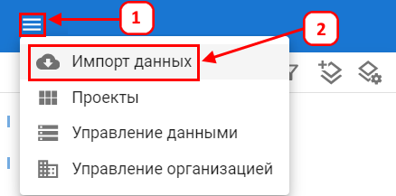
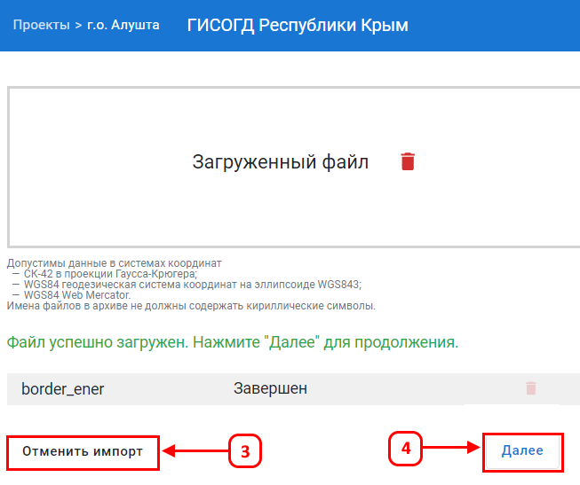
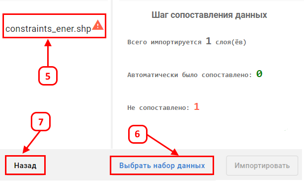
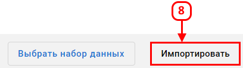

Импорт данных
Импорт данных используется для добавления в проект новых слоев на основе shape-файлов в формате ZIP-архива. Поддерживаются следующие системы координат: СК-42 (Гаусс-Крюгер), WGS84 (геодезическая), WGS84 Web Mercator.
Имена файлов не должны содержать кириллические символы.
Импорт ZIP-архива с shape-файлами
Для добавления новых пространственных данных в проект выполните следующие шаги:
- Подготовьте ZIP-архив с shape-файлами. Убедитесь, что:
- Применяется допустимая система координат: СК-42 (Гаусс-Крюгер), WGS84, WGS84 Web Mercator.
- Имена ZIP-архива и файлы внутри него не содержат кириллических символов.
- Откройте нужный проект.
- Нажмите кнопку Меню (1), затем кнопку Импорт данных (2).

- Выберите подготовленный ZIP-архив и нажмите кнопку Далее (4).
- Для отмены нажмите кнопку Отменить импорт (3).

- После загрузки архива откроется окно Шаг сопоставления данных. Нажмите на кнопку с названием шейпа (5).
- В открывшемся окне сопоставьте слои, настройте отображение атрибутов, при необходимости снимите лишние поля. Выберите набор данных (6). Для отмены нажмите Отмена (7).
- В открывшемся окне укажите, с каким слоем нужно связать загружаемые данные, и сопоставьте поля — выберите, какие столбцы из файла соответствуют атрибутам слоя. Это нужно, чтобы информация правильно отобразилась на карте. Для ненужных полей выберите не импортировать. Выберите набор данных (6) — для упорядоченного хранения и комплексного назначения прав на слой. Для отмены нажмите (7).

- Нажмите кнопку Импортировать (8) для завершения загрузки.

В указанном наборе данных будет создана векторная таблица по выбранной схеме. Данные из шейп-файла перенесутся в таблицу в соответствии с заданным сопоставлением полей. Созданная таблица будет автоматически опубликована в проекте в виде нового слоя.